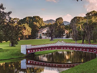

Teleférico
O Teleférico de Nova Friburgo (também conhecido como Teleférico do Suspiro) é um dos principais cartões-postais e atrações turísticas da Região Serrana do Rio de Janeiro. Inaugurado em 1975, ele se destaca como o maior teleférico de cadeirinhas duplas do Brasil, contando com cerca de 1.400 a 1.500 metros de extensão total.
Endereço: Praça do Suspiro, Centro
Country club
O Nova Friburgo Country Clube é um dos principais cartões-postais e centros de lazer de Nova Friburgo, no Rio de Janeiro. O espaço é famoso por sua imensa área verde de 18 hectares de jardins (projetados pelo renomado paisagista francês Auguste Glaziou) e pelo seu imponente casarão do século XIX, que pertenceu ao Barão de Nova Friburgo
Endereço: Avenida Conselheiro Julius Arp, 140, Centro

Pico do Caledônia
O Pico da Caledônia, localizado em Nova Friburgo na divisa com Cachoeiras de Macacu, é uma das maiores elevações da Serra do Mar, com 2.257 metros de altitude. O topo oferece uma das vistas panorâmicas de 360º mais espetaculares do estado do Rio de Janeiro.
Endereço:entrada pelo bairro Cascatinha
Lumiar
Lumiar é o charmoso 5° distrito de Nova Friburgo, localizado na paradisíaca Região Serrana do estado do Rio de Janeiro. Situado a cerca de 28 km do centro de Friburgo e a 150 km da capital fluminense, o vilarejo fica a aproximadamente 700 metros de altitude, sendo famoso por seu clima de interior, excelente gastronomia e forte apelo ao ecoturismo.
Espaço Arp
O Espaço Arp é o principal complexo imobiliário multiuso e polo de inovação de Nova Friburgo, no Rio de Janeiro. Localizado bem no centro da cidade, o local ocupa a imensa estrutura de 45 mil m² da antiga e icônica fábrica Rendas Arp, fundada em 1911 pelo industrial alemão Julius Arp. Hoje, a antiga fábrica têxtil foi totalmente ressignificada e transformou-se em um vibrante centro de convivência ao ar livre que reúne mais de 200 negócios